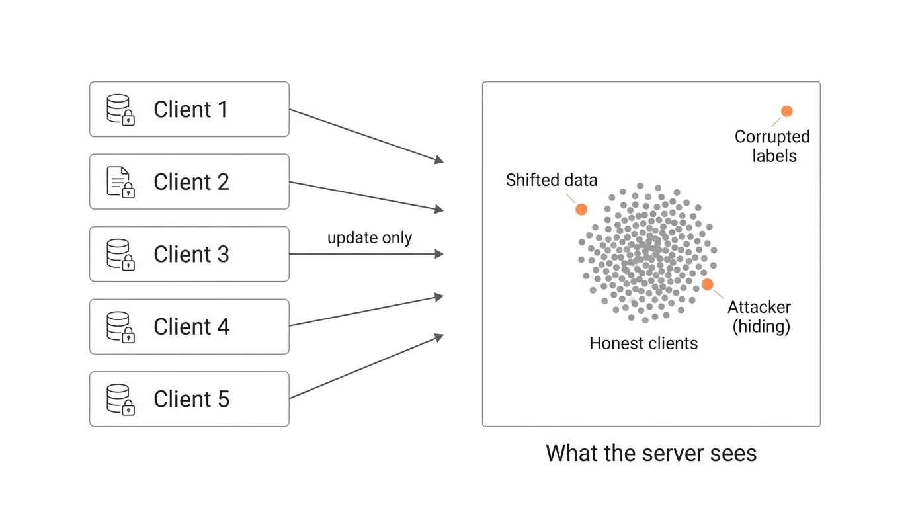

Can We Identify Unreliable Clients Without Seeing Their Data?

In one sentence
In federated learning the server never sees anyone's data — so from the model updates and summary statistics alone, can it tell which clients are broken, which are simply different, and which are attacking?
What is the problem?
Imagine a keyboard app that learns better word suggestions from millions of phones using federated learning: each phone improves a copy of the model on what its owner types, and sends back only the update — the change to the model — never the text itself. The server combines the updates into one shared model.
Now suppose a few of those phones are a problem. One has a bug that scrambles its training labels. Another belongs to someone who types in an unusual dialect. A third is controlled by an attacker who wants the keyboard to suggest a particular brand name, or to fail on certain words. All three send updates that look somewhat different from the crowd. Only one of them is malicious; one is broken; one is perfectly legitimate and deserves to be served better, not thrown out.
The server has to tell them apart without ever looking at the data that explains the difference. This open problem asks: in privacy-preserving federated learning, can we distinguish corrupted, shifted and adversarial clients from their representations, updates and statistics alone?
Why does it matter?
- Security. A handful of malicious clients can plant a hidden "backdoor" in the shared model, or quietly reduce its accuracy for everyone.
- Quality. Clients with faulty sensors or buggy pipelines can drag the model down without anyone meaning harm.
- Fairness. A defence that removes every unusual update will also remove honest minorities — the clients whose data is rare and who most need the model to learn from them (see OP-10).
- Privacy is the whole point. If the only way to check clients is to look at their data, federated learning loses its reason to exist.
What would a solution look like?
The server can see a surprising amount without seeing any data: each client's update, how it changes from round to round, how the client's version of the model responds to a shared probe, and simple statistics the client agrees to report. The hope is that different kinds of unreliability leave different fingerprints in these signals.

A good answer would not just flag "odd" clients. It would give each client a reliability profile — how likely its update is to be corrupted, shifted or adversarial — so the server can respond appropriately: down-weight a broken client, personalise for a shifted one, and exclude an attacker.
| Kind of client | What is going on | What the server should do |
|---|---|---|
| Corrupted | Wrong labels, broken sensor, buggy preprocessing — no intent | Down-weight or ask the client to check its pipeline |
| Shifted | Honest but genuinely different data: new region, device or population | Keep it, and possibly personalise the model for it |
| Adversarial | Deliberately crafted updates to damage or backdoor the model | Exclude it, ideally without the attacker noticing how |
The key idea: look at behaviour, not just distance
Most current defences ask one question: how far is this update from the others? That single number lumps all three kinds of client together. My intuition is that the signals become separable when we look at how a client behaves, not only where its update lands:
- Consistency over time. A shifted client is different in the same way every round. A broken client is often erratic. An attacker may behave normally for a while and then act.
- Which parts of the model move. A different input distribution tends to change the early, feature-extracting layers; label corruption and many backdoors tend to show up more in the final, decision-making layers.
- How the client's model sees a shared probe. If the server sends a small public set of inputs, the internal representations each client's model produces can be compared — a view of "how this client sees the world" that reveals nothing private about its data.
Why is it hard?
- Different and dangerous look alike. In real federations honest clients vary a lot, so the "normal" cluster is wide — and wide clusters are easy for attackers to hide in.
- Attackers adapt. Once a defence is known, an attacker can design updates that pass it. Several published defences have been broken this way.
- Privacy tools hide the evidence. Secure aggregation lets the server see only the sum of updates, not each one; added privacy noise blurs individual updates. Both make detection harder.
- Many attackers can coordinate. A group of fake clients can vote together and shift what "normal" looks like.
- No ground truth. In a real deployment, nobody knows which clients are actually bad, so detectors are hard to evaluate outside simulation.
What has been tried so far
- Robust aggregation: instead of averaging, take a median, trim the most extreme values, or pick the update closest to most others. Effective against crude attacks, but tends to discard honest minorities and can be fooled by careful attackers.
- Similarity-based detection: flag groups of clients whose updates are suspiciously similar to each other, which catches coordinated fake clients.
- Trust from a small clean dataset: the server keeps a little trusted data of its own and scores each update by how well it agrees with an update computed on that data.
- Clustering clients by their updates, mainly to personalise models — which also, as a side effect, separates clients with different data.
- Attack research showing how backdoors can be planted, how a small, well-crafted change can slip past defences, and how much private information updates can leak — which sets the bar any detector must clear.
Most defences answer a yes/no question — "keep or reject?" — and treat every unusual client as a threat. Very few try to tell why a client is unusual.
How I would approach it
- Build a simulated federation containing all three kinds of unreliable client, alongside honest clients with naturally varied data.
- For every client and round, record several privacy-safe signals: the update itself, which layers it changes most, how it changes over rounds, and the representations its model produces on a small public probe set.
- Ask which signals separate the three kinds best — and especially whether any signal separates shifted from adversarial, which is the hard pair.
- Then attack my own detector: give the adversary knowledge of how it works and see how easily it can be evaded.
- Finally, check what survives when secure aggregation or privacy noise is added, since a detector that needs to see individual updates may not be usable in practice.
Questions still open
- Can corrupted, shifted and adversarial clients be told apart reliably, or only "normal vs not normal"?
- Which privacy-safe signals — updates, layer-wise changes, probe representations, history — carry the most information?
- Is there a detector that remains useful against an attacker who knows exactly how it works?
- How much detection is still possible under secure aggregation or strong privacy noise?
- Can the same signals warn a client that the global model is failing on its data? (see OP-01)
- How do we avoid punishing honest minority clients while still excluding attackers? (see OP-10)
This problem is the natural bridge between AI security and federated learning: it pairs with OP-10 on heterogeneous clients, uses the failure-warning ideas from OP-01, and faces the same "attacker adapts to the defence" difficulty as OP-03 on unseen attacks.
Work on this together
If you work on federated learning, poisoning and backdoor attacks, privacy-preserving computation, or you run a federation and have seen strange clients in practice, I would love to hear from you. Telling me which of my signals an attacker would break first is especially welcome.
Reach out about OP-11Further reading
- Blanchard et al. — Machine Learning with Adversaries: Byzantine Tolerant Gradient Descent (NeurIPS 2017)
- Yin et al. — Byzantine-Robust Distributed Learning: Towards Optimal Statistical Rates (ICML 2018)
- Bagdasaryan et al. — How To Backdoor Federated Learning (AISTATS 2020)
- Baruch, Baruch & Goldberg — A Little Is Enough: Circumventing Defenses For Distributed Learning (NeurIPS 2019)
- Fung, Yoon & Beschastnikh — The Limitations of Federated Learning in Sybil Settings (RAID 2020)
- Cao et al. — FLTrust: Byzantine-robust Federated Learning via Trust Bootstrapping (NDSS 2021)
- Bonawitz et al. — Practical Secure Aggregation for Privacy-Preserving Machine Learning (CCS 2017)
- Zhu, Liu & Han — Deep Leakage from Gradients (NeurIPS 2019)